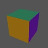

Rotating Cube:Transform commands). Finally, it
shows how to perform a simple action in the movie: a rotation about
the
The cube file used in this script is a
standard one that comes with Geomview.
Load cube
Transform {YZ -$pi/3}
Transform {XY -$pi/6}
Sequence {XY 2*$pi} 30
| Frames of Reference | |
| Sample StageManager Files |
![[HOME]](../../../img/home.gif) |
StageTools Documentation (StageManager/Samples/simple) Created: 03 Jun 1996 --- Last modified: Nov 23, 1999 3:52:08 PM Comments to: dpvc@union.edu |